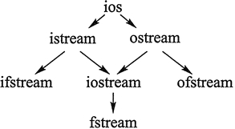

首页 > 编程笔记
什么是流？C++流类和流对象
程序中常用的 cin 和 cout，分别用于从键盘输入数据和向屏幕输出数据（简称为标准 I/O）。除此之外，程序还可以从文件中读入数据，以及向文件中写入数据（简称为文件 I/O)。
数据输入和输出的过程也是数据传输的过程。数据像水一样从一个地方流动到另一个地方，因此，在 C++ 中将此过程称为 “流（stream）”。
在 C++ 的标准类库中，将用于进行数据输入输出的类统称为“流类”。cin 是流类 istream 的对象，cout 是流类 ostream 的对象。要使用流类，需要在程序中包含 iostream 头文件。
C++ 中常用的几个流类及其相互关系如图1所示。
图1中的箭头代表派生关系。例如，ios 是抽象的基类，它派生出 istream 和 ostream。 istream 和 ostream 又共同派生了 iostream 类。
为了避免多继承的二义性，从 ios 派生出 istream 和 ostream 时，均使用了 virtual 关键字（虚继承）。
cerr 和 clog的区别在于：cerr 不使用缓冲区，直接向显示器输出信息；而输出到 clog 中的信息会先被存放到缓冲区，缓冲区满或者刷新时才输出到屏幕。
cout 是 ostream 类的对象。在 Visual Studio 2010 安装文件夹中有
当然，上面关于 cout 对象的定义语句说明 ostream 类是有一个公有构造函数的，如果知道这个构造函数是什么样的，那么也能自己定义 ostream 类的对象——但这么做并无必要。
cout 可以被重定向，而 cerr 不能。所谓重定向，就是将输入的源或输出的目的地改变。例如，cout 本来是输出到屏幕上的，但是经过重定向，本该输出到屏幕上的东西就可以被输出到文件中。
例如下面的程序：
重定向之后，所有对 cout 的输出都不再出现在屏幕上，而是出现在 test.txt 文件中。
test.txt 文件会和本程序的可执行文件出现在同一个文件夹中。重定向仅对本程序有效，不影响其他程序。
运行本程序，输入
6 2↙
程序没有输出，但是打开 test.txt文件，可以看到文件中有
3
如果输入
4 0↙
则程序在屏幕上输出
error.
说明 cerr 不会被重定向。
cin 也是可以被重定向的。如果在程序中加入
数据输入和输出的过程也是数据传输的过程。数据像水一样从一个地方流动到另一个地方，因此，在 C++ 中将此过程称为 “流（stream）”。
在 C++ 的标准类库中，将用于进行数据输入输出的类统称为“流类”。cin 是流类 istream 的对象，cout 是流类 ostream 的对象。要使用流类，需要在程序中包含 iostream 头文件。
C++ 中常用的几个流类及其相互关系如图1所示。

图1：C++类库中的流类
图1：C++类库中的流类
图1中的箭头代表派生关系。例如，ios 是抽象的基类，它派生出 istream 和 ostream。 istream 和 ostream 又共同派生了 iostream 类。
为了避免多继承的二义性，从 ios 派生出 istream 和 ostream 时，均使用了 virtual 关键字（虚继承）。
- istream 是用于输入的流类，cin 就是该类的对象。
- ostream 是用于输出的流类，cout 就是该类的对象。
- ifstream 是用于从文件读取数据的类。
- ofstream 是用于向文件写入数据的类。
- iostream 是既能用于输入，又能用于输出的类。
- fstream 是既能从文件读取数据，又能向文件写入数据的类。
标准流对象
iostream 头文件中定义了四个标准流对象，它们是 cin、cout、cerr 和 clog。- cin 对应于标准输入流，用于从键盘读取数据，也可以被重定向为从文件中读取数据。
- cout 对应于标准输出流，用于向屏幕输出数据，也可以被重定向为向文件写入数据。
- cerr 对应于标准错误输出流，用于向屏幕输出出错信息，不能被重定向。
- clog 对应于标准错误输出流，用于向屏幕输出出错信息，不能被重定向。
cerr 和 clog的区别在于：cerr 不使用缓冲区，直接向显示器输出信息；而输出到 clog 中的信息会先被存放到缓冲区，缓冲区满或者刷新时才输出到屏幕。
cout 是 ostream 类的对象。在 Visual Studio 2010 安装文件夹中有
vc\crt\src\cout.cpp文件，该文件中 cout 的定义如下：
_PURE_APPDOMAIN_GLOBAL static filebuf fout(_cpp_stdout); _PURE_APPDOMAIN_GLOBAL extern _CRTDATA2 ostream cout (&fout);简单地看，就是：
ostream cout(&fout);ostream 类的无参构造函数和复制构造函数都是私有的，因此在程序中一般无法定义 ostream 类的对象，唯一能用的 ostream 类的对象就是 cout。
当然，上面关于 cout 对象的定义语句说明 ostream 类是有一个公有构造函数的，如果知道这个构造函数是什么样的，那么也能自己定义 ostream 类的对象——但这么做并无必要。
cout 可以被重定向，而 cerr 不能。所谓重定向，就是将输入的源或输出的目的地改变。例如，cout 本来是输出到屏幕上的，但是经过重定向，本该输出到屏幕上的东西就可以被输出到文件中。
例如下面的程序：
#include <iostream> using namespace std; int main() { int x,y; cin >> x >> y; freopen("test.txt", "w", stdout); //将标准输出重定向到 test.txt文件 if( y == 0 ) //除数为0则输出错误信息 cerr << "error." << endl; else cout << x /y ; return 0; }第 7 行的 freopen 是一个标准库函数，第二个参数 w 代表写模式，第三个参数代表标准输出。该语句的作用是将标准输出重定向为 test.txt 文件。
重定向之后，所有对 cout 的输出都不再出现在屏幕上，而是出现在 test.txt 文件中。
test.txt 文件会和本程序的可执行文件出现在同一个文件夹中。重定向仅对本程序有效，不影响其他程序。
运行本程序，输入
6 2↙
程序没有输出，但是打开 test.txt文件，可以看到文件中有
3
如果输入
4 0↙
则程序在屏幕上输出
error.
说明 cerr 不会被重定向。
cin 也是可以被重定向的。如果在程序中加入
freopen("input.dat", "r", stdin);
第二个参数 r 代表读入方式，第三个参数 stdin 代表标准输入。执行此语句后，cin 就不再从键盘读入数据，而是从 input.dat 文件中读人数据，input.dat 文件中有什么，就相当于从键盘输入了什么。关注公众号「站长严长生」，在手机上阅读所有教程，随时随地都能学习。内含一款搜索神器，免费下载全网书籍和视频。

微信扫码关注公众号